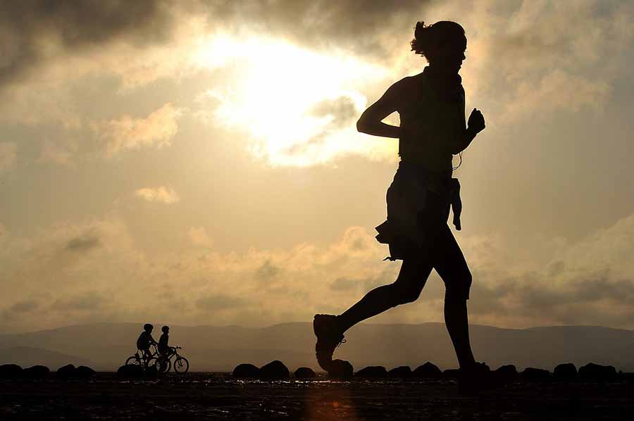

If you are healthy, try these eight tips for safely exercising while maintaining social distance during the COVID-19 pandemic.
Exercise outdoors.
Most public gym facilities are likely closed but if yours is still open, we recommend avoiding it until public health officials say otherwise. Instead, take your fitness into the fresh air outside.
Consider hiking a new path or trying a water-based activity like kayaking, if the weather permits.
Younger athletes can also benefit from outdoor play by themselves or in small groups. Be sure to supervise kids playing in small groups or alone, and discourage the use of sporting equipment or jungle gyms to minimize direct contact with each other and surfaces.
Exercise by yourself, with a friend, or in small groups of less than 10.
If you’re heading outside, consider bringing your family or a friend to keep you company, but keep the U.S. Centers for Disease Control and Prevention (CDC) guidelines in mind. Choose activities that allow you to maintain an appropriate distance between each other,
such as hiking or biking. Do your best to minimize direct contact and save your high-fives and fist bumps for another day.
If you are going to exercise with a small group of friends, plan to meet up at the destination to avoid close quarters like carpools, and consider outdoor activities rather than fitness studios.
Engage in non-contact activities that allow spacing of 6 feet between participants.
Limiting physical contact is one of the best ways to prevent the spread of coronavirus—and any other virus. Social distancing guidelines recommend maintaining six feet of space between people, and there’s plenty of activities that allow for this, such as biking or tennis.
Other group activities, such as running, bodyweight workout routines, and fitness videos allow for additional spacing. If you’re using any equipment, be sure to thoroughly clean and disinfect it before and after use, even if you’re the only one using it.
Rethink recess.
With children home from school and focusing on distance learning, don’t forget recess. Physical activity is an important part of the school day and helps children not only with fitness, but with mental focus and concentration as well.
Be sure to include a combination of structured and unstructured physical activity into every day your child is home.
Work on improving your general fitness.
Having a strong core and aerobic fitness level is necessary for good fitness. You can work on strengthening your core and cardiovascular condition without compromising the safety of those around you by using:
- Home gyms
- Home-based video workouts
- Web-based exercise programs
In fact, many fitness related instructors and organizations are currently offering free online workout classes and routines for new users as a way to encourage activity and improve morale throughout the country.
Clean and disinfect any equipment you use alone or with others.
The virus may remain active on untreated surfaces for an extended period, so be sure to follow the CDC guidelines for cleaning and disinfecting surfaces and any equipment you use by yourself or with others. Using a cleaning solution that contains at least 70% alcohol is important, even if you and your family are using your own in-home facilities.
Exercise using your body weight.
Using your own body weight with a circuit-type program can be an effective way to maintain strength and aerobic health in a short period of time. Bodyweight workouts can incorporate a variety of movements that don’t require equipment, including:
- Burpees
- Squats
- Lunges
- Pushups
- Yoga
Remember that with any exercise program, you should gradually increase frequency, intensity, and duration to avoid overuse injuries. If it hurts, stop doing it.
Stay in touch with your fitness community online.
Whether you’re a competitive athlete or a weekend warrior, stay in touch with your friends and teammates through appropriate social media channels. Consider sharing your thoughts about this situation and hopes for returning to normal activity as soon as safely possible.
Consider on-line challenges for steps, or stationary bike rides, or even run a “virtual race” together and compare times.